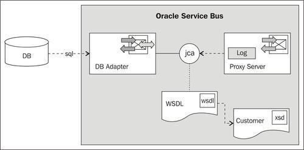
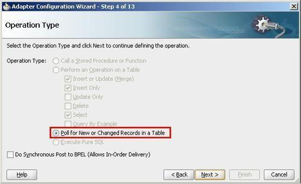
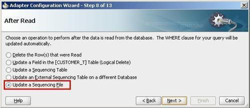
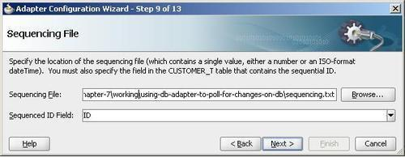
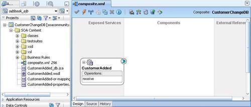
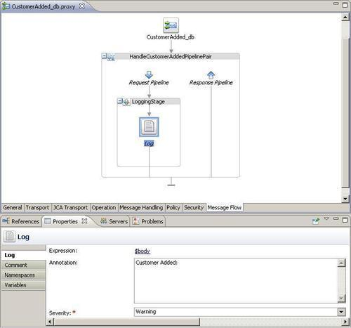
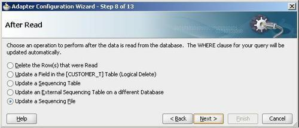
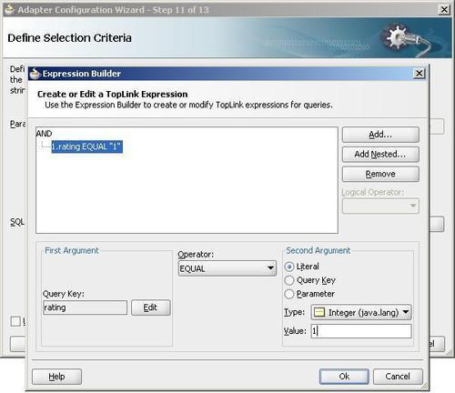
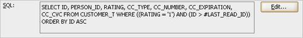

In this recipe, we will use the setup of the previous recipe and implement an inbound DB adapter. The DB adapter allows triggering execution of a proxy service upon changes on a table by using polling. The adapter is capable of marking or deleting read and processed rows in several ways. We will implement a proxy service which consumes from a DB adapter, as shown in the following screenshot:

For the configuration of the DB Adapter we will use JDeveloper and then switch to Eclipse to implement the proxy service wrapping the inbound DB adapter.
For this recipe, we will use the database tables created with the OSB Cookbook standard environment. Make sure that the connection factory is set up in the database adapter configuration, as shown in the Introduction of this chapter.
You can import the OSB project containing the base setup for this recipe into Eclipse from \chapter-7\getting-ready\using-db-adapter-to-poll-for-changes-on-db.
First create the DB adapter used to poll the database. In JDeveloper perform the following steps:
composite.xml of the project CustomerChangeDB. CustomerAdded in the Service Name field. OsbCookbookConnection into the Connection Name field. osb_cookbook into the Username and Password field. eis/DB/OsbCookbookConnection. We will configure the DB connection factory using that JNDI alias later through the WebLogic Console. Click on Next.
CUSTOMER_T, move it to the selected pane and click on OK.

You should now have a SCA composite with one exposed service, as shown in the following screenshot:

This is all we need to do in JDeveloper. Let's switch back to Eclipse OEPE and perform the following steps:
CustomerAdded_db.jca file and select Oracle Service Bus | Generate Service from the context menu. proxy folder for the location of the proxy service. proxy folder. LoggingStage. $body into the Expression field and click OK. Customer Added: into the Annotation field.
\chapter-2\getting-ready\using-db-adapter-to-poll-for-changes-on-db\sql\insert_customer.sql. It creates a new customer on the database. CUSTOMER_T table.In JDeveloper, we created and configured a DB adapter, which periodically (default is every five seconds) polls a database table for added records. To know which was the last primary key processed, the value of the ID column of the polled table is stored in a sequencing file.
Technically, the DB adapter is executed by the DbAdapter component, which is deployed on WebLogic server as a resource adapter. The adapter we created references resources of this DbAdapter component. Therefore, we had to configure the connection factory there, which in turn uses datasource resources configured on WebLogic server as a standard datasource.
When the DB adapter detects a new row in CUSTOMER_T table, it invokes the proxy service providing an XML representation of data for the new row. Our proxy service then simply logs the XML using a Log action.
The DB adapter provides a lot more options on how changes should be detected and how processed rows are marked. It allows modifying the query used to poll the database, to use bind parameters and to join tables to query a whole graph of data.
In our example, we have seen how to poll for new records. It is also possible to poll for changed records, but in this case it is not sufficient to store the ID of a processed record in the sequencing file. A possible solution would be to store a last changed timestamp in the sequencing file. However, this requires that this timestamp is updated with every change or insert operation on the table.
It is not possible to poll for deleted records. If this is a requirement, a good solution is to set up a trigger which writes every change into a queue (for example, AQ) or into a change-tracking table. However, such a solution is only feasible if you change the database you are polling on.
A third way to query changes is to execute a custom select or query by example. Both are also possible with the DB adapter. However, this select operation must be executed through a business service. So it is no longer the DB adapter, which periodically triggers the select action, but some other external timer. The timer triggers a proxy service, which in turn executes the business service. In that case, the DB adapter is used in an outbound operation.
In our example, we just stored the ID of the last processed row in a sequencing file. This is a non-invasive solution, which only works if inserted rows get ascending keys. The After Read screen of the DB adapter wizard shows some more options to mark processed rows in a table:

In fact, there are three ways to register whether a row was processed:
When polling a table for changes, it is possible to add filters to the query, for example, to only match records which are released for processing. For instance, if we are only interested in customers with rating = '1', we could add the following filter on the Define Selection Criteria screen:

This results in the following query:

Unfortunately, it is only possible to provide filters with constant values when polling. These filter values cannot be changed at runtime. If filter values need to be more dynamic and changeable at runtime, then a database view, implementing the dynamic filter, might be a solution, depending on the database product being used. This view can then be used instead of the table for the polling.
When using a select operation instead of polling, parameters can be sent to the query. As the select operation must be explicitly called through a business service, we have the opportunity to provide parameters in the request body.
There are some more options to be configured on the DB adapter within the JDeveloper wizard, namely, query timeout and retry-behavior in case of failures.
Other options, such as the dispatch policy or transaction usage, are configured on the JCA Transport and Message Handling tab of the proxy service within Eclipse OEPE.
It is recommended to use a dispatch policy, (which is in fact a Work Manager in WebLogic terms) which has its Ignore Stuck Threads flag enabled. Failure to do so results sooner or later in the infamous 'stuck thread' exceptions in the log file. This is because the DB adapter holds a thread used to poll the database which is never released after. WebLogic treats this as an error in its default configuration.